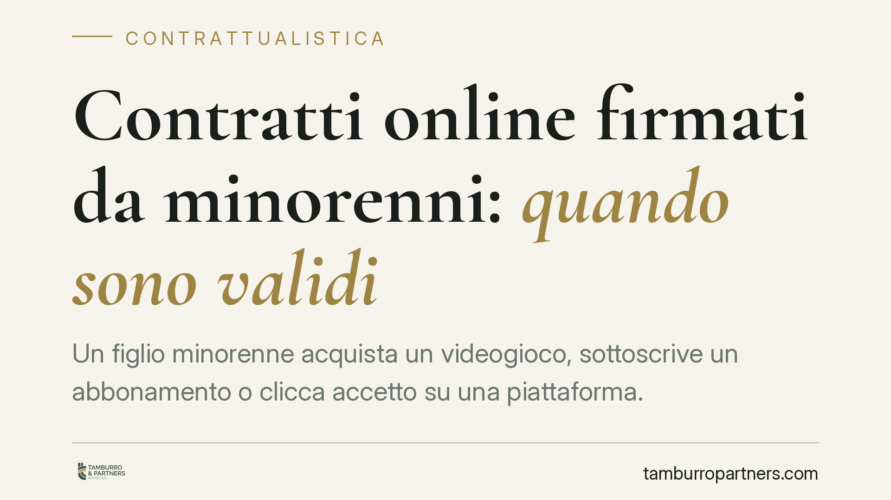

Contratti online firmati da minorenni: quando sono validi
Un figlio minorenne acquista un videogioco, sottoscrive un abbonamento o clicca "accetto" su una piattaforma. Quel contratto vincola davvero la famiglia? La regola è chiara: gli atti conclusi dal minore sono annullabili. Ma esistono eccezioni rilevanti, soprattutto negli acquisti online, dove l'età è difficile da verificare e il raggiro può ribaltare la tutela prevista dalla legge.

Il quadro: incapacità di agire del minore
Chi non ha compiuto diciotto anni è privo della capacità di agire. Significa che non può concludere validamente contratti da solo: la gestione del suo patrimonio spetta ai genitori esercenti la responsabilità genitoriale.
Da qui la regola generale dell'art. 1425 cod. civ.: il contratto è annullabile quando una delle parti era legalmente incapace di contrattare. L'annullabilità, però, non equivale a nullità. Il contratto produce effetti fino a quando non viene impugnato, e l'azione spetta solo a chi la legge intende proteggere, cioè al minore (tramite i genitori) e, al più tardi, allo stesso interessato entro cinque anni dal raggiungimento della maggiore età.
L'eccezione del raggiro sull'età: art. 1426 cod. civ.
La tutela del minore non è assoluta. L'art. 1426 cod. civ. stabilisce che il contratto non è annullabile se il minore ha *occultato con raggiri la sua minore età*. La semplice dichiarazione di essere maggiorenne, però, non basta: serve un artificio idoneo a ingannare la controparte.
Nel commercio elettronico il punto è delicato. Spuntare una casella "ho più di 18 anni" è, secondo l'orientamento prevalente, una dichiarazione mendace ma non un raggiro. Diversa è l'ipotesi in cui il minore falsifichi documenti o utilizzi dati altrui per superare sistemi di verifica: qui il raggiro può integrarsi e il contratto resta valido.
Ordinaria e straordinaria amministrazione
La distinzione tra atti di ordinaria e straordinaria amministrazione è centrale. Gli acquisti di modico valore, coerenti con l'età e con le abitudini quotidiane del minore, tendono a essere considerati validi perché rientrano in una prassi socialmente tollerata: l'acquisto di un contenuto digitale di pochi euro difficilmente verrà annullato.
Gli impegni economicamente significativi o continuativi, come abbonamenti onerosi, acquisti in-app rilevanti o contratti che vincolano nel tempo, restano invece esposti all'annullamento. Il criterio non è meramente quantitativo: conta la proporzione tra l'impegno assunto e la condizione del minore.
Cosa cambia in concreto
Per i genitori, la conseguenza pratica è che non ogni spesa del figlio è irreversibile. Un abbonamento sottoscritto senza il loro consenso può essere contestato, ma occorre agire con tempestività e documentare l'assenza di raggiri.
Per chi vende online, il rischio è speculare: affidarsi a una semplice dichiarazione di maggiore età non mette al riparo dall'annullamento. La solidità dei sistemi di verifica dell'età diventa un elemento di gestione del rischio contrattuale, non un mero adempimento formale.
Va infine ricordato che l'annullamento comporta la restituzione delle prestazioni: il minore deve restituire quanto ricevuto, ma solo *nei limiti dell'arricchimento*, principio che riduce l'esposizione della famiglia.
Cosa fare in concreto
- Verificate subito i movimenti: al primo addebito anomalo, controllate account, ricevute e condizioni contrattuali sottoscritte dal minore.
- Contestate per iscritto e per tempo: inviate una comunicazione formale al venditore chiedendo l'annullamento e la restituzione, conservando prova dell'invio.
- Documentate l'assenza di raggiri: raccogliete la schermata della procedura di registrazione, per dimostrare che non vi è stato uso di documenti falsi.
- Distinguete gli acquisti: valutate separatamente le spese di modico valore da quelle rilevanti o ricorrenti, perché la tutela varia.
- Impostate controlli preventivi: attivate parental control, limiti di spesa e autorizzazioni sui dispositivi e sui metodi di pagamento.
Consigliamo di non rinviare la contestazione: l'inerzia prolungata può essere letta come acquiescenza e indebolire la posizione della famiglia.
Disclaimer
Contributo informativo a cura di Tamburro & Partners - Avv. Giuseppe Tamburro. Non costituisce parere legale.
Ogni contratto ha il suo equilibrio.
Se vuoi una revisione delle clausole o una redazione su misura, scrivi allo studio. Ti rispondiamo entro un giorno lavorativo.